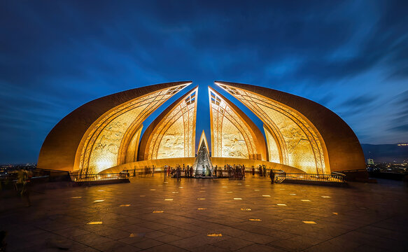
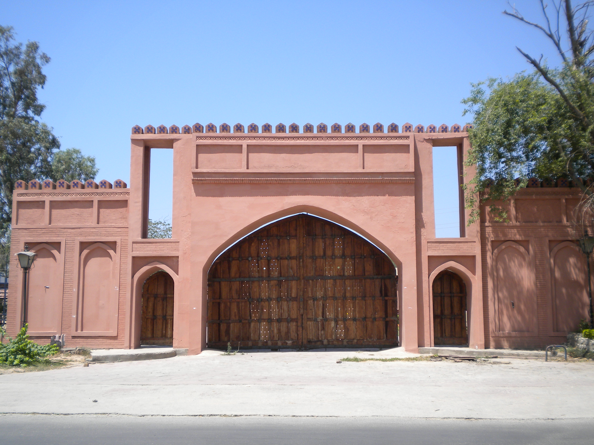
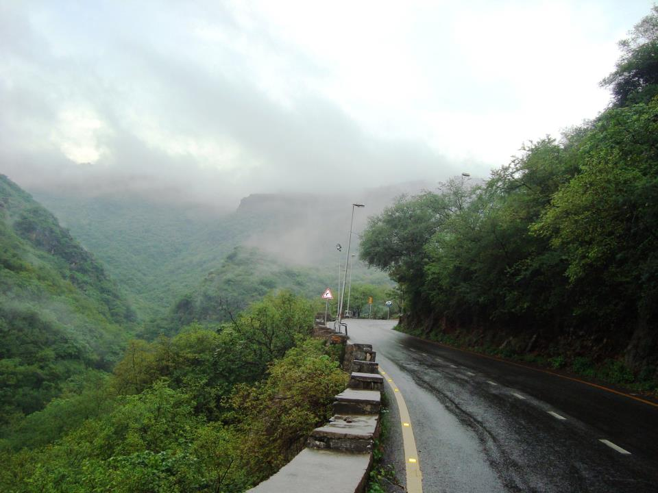
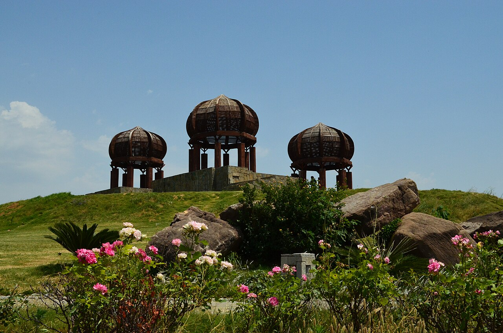

About Islamabad
Built in the 1960s to serve as Pakistan's new capital, Islamabad is a planned city renowned for its orderly layout, green spaces, and clean streets. Situated at the foot of the Margalla Hills, it is surrounded by natural beauty and is considered one of the most scenic capital cities in the world.
The city was designed by Greek architect Constantinos Apostolou Doxiadis, with wide tree-lined boulevards, residential sectors, and abundant parks. The adjacent city of Rawalpindi gives Islamabad a unique twin-city character.

Top Attractions

Faisal Mosque
One of the largest mosques in the world, its distinctive tent-shaped design set against the Margalla Hills is iconic.

Lok Virsa Museum
A rich repository of Pakistan's cultural heritage, showcasing folk art, crafts, and artefacts from all regions.

Margalla Hills
A national park offering hiking trails, wildlife, and spectacular views of the city and surrounding landscape.

Fatima Jinnah Park
The largest urban park in the country, a favourite spot for families, joggers, and picnickers.
Quick Facts
| Fact | Detail |
|---|---|
| Founded | 1960s (construction), 1967 (designated capital) |
| Population | Approx. 1.2 million (city proper) |
| Elevation | 507 metres above sea level |
| Best Time to Visit | October–April |
| Nearest Airport | New Islamabad International Airport (ISB) |